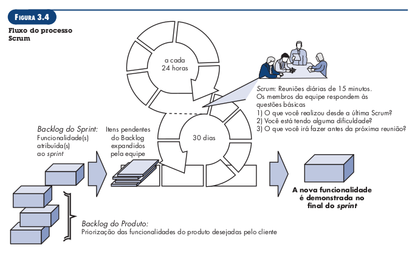

Modelagem ágil de requisitos
Lista de exercícios
1. O que os princípios de desenvolvimento Ágil prioriza?
- Indivíduos e interações acima de processos e ferramentas.
- Software operacional acima de documentação completa.
- Colaboração dos clientes acima de negociação contratual.
- Respostas a mudanças acima de seguir um plano.
Fonte: [1]
2. Por que o desenvolvimento Ágil é importante?
Os métodos ágeis visam sanar fraquezas reais e perceptíveis da engenharia de software convencional, mas não é indicado para todos os projetos, produtos, pessoas e situações. Tampouco é a antítese da prática de engenharia de software consistente e pode ser aplicado como uma filosofia geral para os trabalhos de software.
O desenvolvimento ágil é importante por fornecer uma alternativa à engenharia convencional mais adaptada ao ambiente mais moderno de sistemas, que é mais acelerado e está em constante mudança. Essa metodologia tem se mostrado capaz de entregar sistemas corretos rapidamente.
Fonte: [1]
3. Quais são as etapas envolvidas desenvolvimento Ágil?
As etapas de comunicação, planejamento, modelagem, construção e emprego, mas na forma de tarefas mínimas que impulsionam a equipe para o desenvolvimento e para a entrega.
Fonte: [1]
4. Como garantir que o trabalho do desenvolvimento Ágil foi realizado corretamente?
O trabalho está correto quando a equipe ágil concorda que o processo funciona e produz incrementos de software passíveis de entrega, que satisfazem o cliente.
Fonte: [1]
5. O que é Scrum?
É um método de desenvolvimento ágil de software, que foi concebido no início dos anos 1990. Os seus princípios são consistentes com o manifesto ágil, e seu processo engloba as atividades de: requisitos, análise, projeto, evolução e entrega
Fonte: [1]
6. O que são Backlog e Sprints?
O backlog é uma lista com prioridades dos requisitos ou funcionalidades do projeto que fornecem valor comercial ao cliente. Os itens podem ser adicionados ao backlog a qualquer momento do projeto.
As sprints são unidades de trabalho solicitadas para atingir um requisito estabelecido no backlog e que precisa ser ajustado dentro de uma janela de tempo.
Alterações não são introduzidas durante execução de sprints, o que permite que os membros de uma equipe trabalhem de forma estável.

Figura 1: Fluxo do processo Scrum. Fonte: [1]
Fonte: [1]
7. O que é Backlog do Produto (Product Backlog) e Backlog do Sprint (Sprint Backlog)?
O backlog do produto é a priorização das funcionalidades do projeto, desejadas pelo cliente. O backlog da sprint é o conjunto de atividades atribuídas à sprint.
Fonte: [1]
8. O que são Reuniões Scrum, Scrum Master e Product Owner?
Reuniões Scrum são reuniões curtas, tipicamente de 15 minutos, realizadas diariamente pela equipe Scrum, durante a qual três perguntas chave são respondidas por todos os membros da equipe:
- O que você realizou desde a última reunião de equipe?
- Quais obstáculos está encontrando?
- O que planeja realizar até a próxima reunião da equipe? Scrum master é um líder de equipe, que conduz a reunião scrum e avalia as respostas e cada integrante.
O product owner define os itens que compõem o backlog, faz a priorização destes e descreve-os para a equipe.
Fontes: [1] e [2]
9. Defina uma persona do Product Owner do seu projeto da disciplina
| Persona | Product Owner |
|---|---|
| Nome fictício | Lívia Marques |
| Foto | Figura 1: Persona Lívia Marques. Fonte: [3] |
| Cargo | Professora de xadrez |
| Dados demográficos | |
| Status | Product Owner |
| Objetivos | Ela almeja ensinar os seus alunos da forma mais didática e divertida possível, para que eles desenvolvam o raciocínio lógico e participem de campeonatos. Ela possui 4 turmas de xadrez, de níveis iniciante, básico, intermediário e avançado, com alunos de idades diversas em cada uma. Ela deseja completar suas tarefas de maneira rápida, não cometer erros, |
| Tarefas | As principais tarefas de Lívia no trabalho são: |
| Relacionamentos | Lívia é uma professora muito querida por seus estudantes e colegas de trabalho, apesar de não ser muito comunicativa, é uma pessoa prestativa e atenciosa. Ela possui pequenos grupos de amigos e um noivo que a apoia bastante no trabalho. |
| Requisitos | Ela precisa de um sistema onde possa promover campeonatos entre os seus alunos, disponibilizar atividades para os alunos resolverem e exercitar suas próximas habilidades. |
| Expectativas | O sistema deve possuir funcionalidades destinadas para diferentes graus de habilidade com tecnologia e deve possuir ícones que auxiliem seus alunos mais novos a utilizarem a plataforma. |
10. O que são histórias de usuários (User Stories)? Qual a estrutura que elas devem ser escritas?
A especificação dos itens em um backlog são feitas em termos de histórias de usuários, que são um registro de requisitos focados em o que são os requisitos e não em como serão implementados. Possuem o seguinte formato:
"Eu, como [papel], quero [o que], pelo [motivo]"
As histórias de usuário devem ser curtas, detalhadas e específicas.
Fonte: [2]
11. Apresente dois exemplos de histórias de usuários (User Stories)?
Exemplo de uma história de usuário referente à plataforma Aprender. Eu, como estudante, quero visualizar as próximas tarefas a serem entregues para me organizar melhor.
Exemplo de uma história de usuário referente à plataforma lichess: Eu, como usuário, desejo jogar partidas de xadrez online contra adversários reais para me preparar para os campeonatos de xadrez.
12. Qual a diferença entre Tema, Épico e histórias de usuários (User Stories)? Forneça um exemplo
Temas, épicos e histórias de usuário apresentam diferentes níveis de especificação de requisitos. Um tema define um grupo comum de épicos, sendo que um épico é uma história de usuário que pode ser melhor detalhada. Um exemplo encontra-se na Tabela 1.
| Tema | Épico | História de Usuário |
|---|---|---|
| Tutoriais de xadrez | Eu, como usuário, desejo praticar movimentos de xadrez para exercitar minhas habilidades. | Eu, como usuário, desejo resolver quebra cabeças de xadrez para exercitar minhas habilidades. |
| Eu, como usuário, desejo resolver quebra cabeças de xadrez para exercitar minhas habilidades. | ||
| Eu, como usuário, desejo aprender movimentos de xadrez para aumentar meu repertório de técnicas. | Eu, como usuário, desejo solucionar tutoriais guiados de xadrez para aprender movimentos. | |
| Eu, como administrador, desejo criar novos tutoriais de movimentos para aumentar o público alvo da plataforma. |
Tabela 1: Exemplo de tema, épico e histórias de usuário. Fonte: autor.
Bibliografia
[1] PRESSMAN R., MAXIM B. Engenharia de Software: Uma Abordagem Profissional 8ª. Ed, 2016.
[2] SERRANO M., SERRANO. M. Slides: Requisitos - Aula 15.
[3] This Person Doesn't Exist: https://thispersondoesnotexist.com/
[4] Personas - Usability.gov: https://www.usability.gov/how-to-and-tools/methods/personas.html/